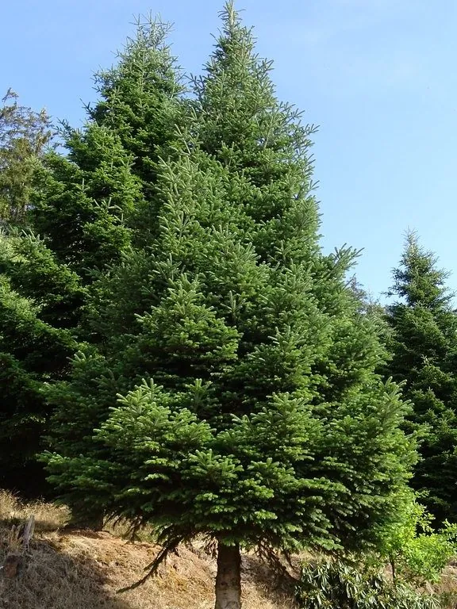

乔木 · 植物界
黄果冷杉 Abies ernestii

松科冷杉属常绿乔木，球果成熟时黄褐色，中国西南特有，多生于川滇高山峡谷，是重要的水源涵养树种。
- 分类
- 门裸子植物门纲松柏纲目松柏目科松科属冷杉属
- 栖息环境
- 海拔 2500–4000 米的高山峡谷与山坡，喜冷凉湿润、排水良好
- 地理分布
- 中国四川西部、云南西北部与西藏东南部，为中国特有种
- 保护级别
- IUCN 暂无评估；中国特有种，野生资源受采伐影响，需保护
物种志
黄果冷杉为常绿乔木，高可达 40 米，树皮灰褐色并纵裂，小枝淡黄色，无毛。叶片条形、扁平，长 2–4 厘米，先端尖，叶背有两条白色气孔带。雌雄同株，球果直立、圆柱形，长 6–10 厘米，成熟时黄褐色，种鳞宽大，种子具翅。
本种为中国特有种，分布于四川西部、云南西北部与西藏东南部，生于海拔 2500–4000 米的高山峡谷与山坡，常与云杉、高山栎混生，喜冷凉湿润气候与排水良好的山地棕壤。它耐寒、耐瘠薄，是川滇高山林区的主要用材与水源涵养树种。木材纹理直、易加工，可供建筑、家具与造纸；树形挺拔，也可用于高海拔城镇绿化。因采伐与生境退化，野生资源需要保护。
形态与习性
- 株高可达 40 米，树干通直
- 花期5 月，球花单性同株
- 球果成熟9–10 月，球果黄褐色
- 光照喜光，幼树稍耐阴
- 水分喜湿润，耐高山云雾
- 海拔2500–4000 米的高山峡谷
- 主要用途建筑与家具用材、水源涵养
趣味知识
- 黄果冷杉因球果成熟时呈黄褐色而得名，与多数冷杉的暗紫色球果不同。
- 它常生长在川滇交界的深切峡谷两侧，是当地森林更新的先锋树种之一。
- 冷杉属球果直立，种鳞成熟后从轴上脱落，与云杉的悬垂球果不同。
- 黄果冷杉木材轻软，是制作家具、胶合板与纸浆的原料。